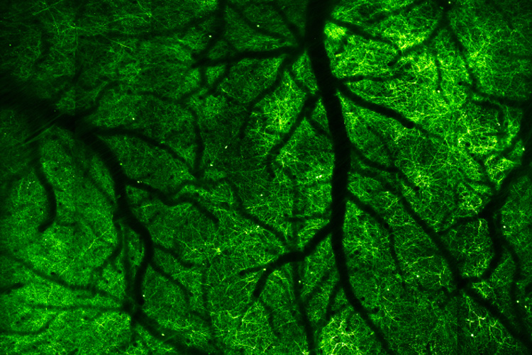
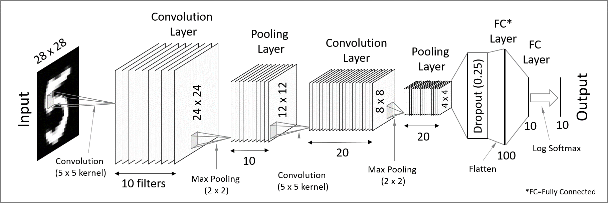

Concepts:
AI, machine learning, deep learning, and neural networks
What is machine learning?
Artificial intelligence is a vast field: any system mimicking animal intelligence falls in its scope.
Machine learning (ML) is a subfield of artificial intelligence that can be defined as computer programs whose performance at a task improves with experience.
Since this experience comes in the form of data, ML consists of feeding vast amounts of data to algorithms to strengthen pathways.

Example in image recognition
Coding all the possible ways—pixel by pixel—that a picture can represent a certain object is an impossibly large task. By feeding examples of images of that object to a neural network however, we can train it to recognize that object in images that it has never seen (without explicitly programming how it does this!).

Types of learning
There are now more types of learning than those presented here. But these initial types are interesting because they will already be familiar to you.
Supervised learning
You have been doing supervised machine learning for years without looking at it in the framework of machine learning:
- Regression is a form of supervised learning with continuous outputs
- Classification is supervised learning with discrete outputs
Supervised learning uses training data in the form of example input/output \((x_i, y_i)\) pairs.
Goal:
If \(X\) is the space of inputs and \(Y\) the space of outputs, the goal is to find a function \(h\) so that
for each \(x_i \in X\):
- \(h_\theta(x_i)\) is a predictor for the corresponding value \(y_i\)
- (\(\theta\) represents the set of parameters of \(h_\theta\)).
→ i.e. we want to find the relationship between inputs and outputs.
Unsupervised learning
Here too, you are familiar with some forms of unsupervised learning that you weren’t thinking about in such terms:
Clustering, social network analysis, market segmentation, PCA … are all forms of unsupervised learning.
Unsupervised learning uses unlabelled data (training set of \(x_i\)).
Goal:
Find structure within the data.

Artificial neural networks
Artificial neural networks (ANN) are one of the machine learning models (other models include decision trees or Bayesian networks). Their potential and popularity has truly exploded in recent years and this is what we will focus on in this course.
Artificial neural networks are a series of layered units mimicking the concept of biological neurons: inputs are received by every unit of a layer, computed, then transmitted to units of the next layer. In the process of learning, experience strengthens some connections between units and weakens others.
In biological networks, the information consists of action potentials (neuron membrane rapid depolarizations) propagating through the network. In artificial ones, the information consists of tensors (multidimensional arrays) of weights and biases: each unit passes a weighted sum of an input tensor with an additional—possibly weighted—bias through an activation function before passing on the output tensor to the next layer of units.
The bias allows to shift the output of the activation function to the right or to the left (i.e. it creates an offset).
Schematic of a biological neuron:

Schematic of an artificial neuron:

While biological neurons are connected in extremely intricate patterns, artificial ones follow a layered structure. Another difference in complexity is in the number of units: the human brain has 65–90 billion neurons. ANN have much fewer units.
Neurons in mouse cortex:

Neural network with 2 hidden layers:

The information in biological neurons is an all-or-nothing electrochemical pulse or action potential. Greater stimuli don’t produce stronger signals but increase firing frequency. In contrast, artificial neurons pass the computation of their inputs through an activation function and the output can take any of the values possible with that function.
Threshold potential in biological neurons:

Some of the most common activation functions in artificial neurons:

Which activation function to use depends on the type of problem and the available computing budget. Some early functions have fallen out of use while new ones have emerged (e.g. sigmoid got replaced by ReLU which is easier to train).
Learning
The process of learning in biological NN happens through neuron death or growth and through the creation or loss of synaptic connections between neurons. In ANN, learning happens through optimization algorithms such as gradient descent which minimize cross entropy loss functions by adjusting the weights and biases connecting each layer of neurons over many iterations (cross entropy is the difference between the predicted and the real distributions).

Gradient descent
There are several gradient descent methods:
Batch gradient descent uses all examples in each iteration and is thus slow for large datasets (the parameters are adjusted only after all the samples have been processed).
Mini-batch gradient descent is an intermediate approach: it uses mini-batch sized examples in each iteration. This allows a vectorized approach (and hence parallelization).
The Adam optimization algorithm is a popular variation of mini-batch gradient descent.
Stochastic gradient descent uses one example in each iteration. It is thus much faster than batch gradient descent (the parameters are adjusted after each example). But it does not allow any vectorization.

3Blue1Brown by Grant Sanderson videos
3Blue1Brown by Grant Sanderson has a series of 4 videos on neural networks which is easy to watch, fun, and does an excellent job at introducing the functioning of a simple neural network.
What are NN? (19 min)
Watch this video beyond the acknowledgement as the function ReLU (a really important function in modern neural networks) is introduced at the very end.
As you develop your own ML models, if you find that your mathematical background is shaky, 3blue1brown also has an excellent series of videos on linear algebra and an equally great one on calculus.
How do NN learn? (21 min)
What is backpropagation? (14 min)
There is one minor terminological error in this video: they call the use of mini-batches stochastic gradient descent. In fact, this is called mini-batch gradient descent. Stochastic gradient descent uses a single example at each iteration.
How does backpropagation work? (10 min)
Types of ANN
Fully connected neural networks

Each neuron receives inputs from every neuron of the previous layer and passes its output to every neuron of the next layer.
Convolutional neural networks

Convolutional neural networks (CNN) are used for spatially structured data (e.g. in image recognition).
Images have huge input sizes and would require a very large number of neurons in a fully connected neural net. In convolutional layers, neurons receive input from a subarea (called local receptive field) of the previous layer. This greatly reduces the number of parameters.
Optionally, pooling (combining the outputs of neurons in a subarea) reduces the data dimensions. The stride then dictates how the subarea is moved across the image. Max-pooling is one of the forms of pooling which uses the maximum for each subarea.
Recurrent neural networks

{kind=link}
Recurrent neural networks (RNN) such as Long Short-Term Memory (LSTM) are used for chain structured data (e.g. in speech recognition).
They are not feedforward networks (i.e. networks for which the information moves only in the forward direction without any loop).
Transformers
A combination of two RNNs or sets of RNNs (the encoder and the decoder) is used in sequence to sequence models for translation or picture captioning. Such models were slow to process a lot of data.
In 2014 and 2015, the concept of attention (giving added weight to important words) was developed, greatly improving the ability of such models to process a lot of data.
This blog post by Jay Alammar—a blogger whose high-quality posts have been referenced in MIT and Stanford courses—explains this in a high-level visual fashion.
The problem with recurrence is that it is not easily to parallelize (and thus to run fast on GPUs).
In 2017, a new model—the transformer—was proposed: by using only attention mechanisms and no recurrence, the transformer achieves better results in an easily parallelizable fashion.
Jay Alammar has also a blog post on the transformer. The post includes a 30 min video.
With the addition of transfer learning, powerful transformers emerged in the field of NLP (Natural Language Processing). Examples include BERT (Bidirectional Encoder Representations from Transformers) from Google and GPT-3 (Generative Pre-trained Transformer-3) from OpenAI.
Jay Alammar has yet another great blog post on these advanced NLP models.
Deep learning
The first layer of a neural net is the input layer. The last one is the output layer. All the layers in-between are called hidden layers. Shallow neural networks have only one hidden layer and deep networks have two or more hidden layers. When an ANN is deep, we talk about Deep Learning (DL).